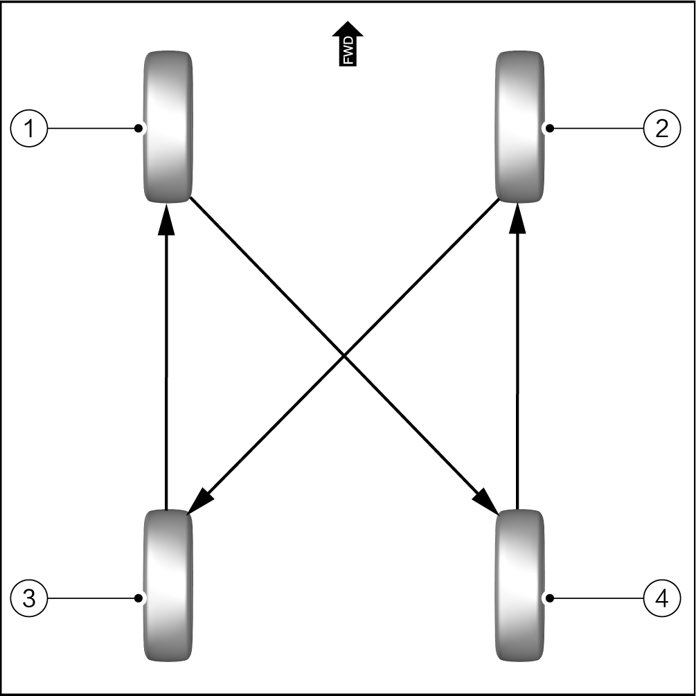

Due to the different loads on the front and rear tires of the vehicle during operation, the wear will also be very different. Therefore, in order to avoid the wear of the tires in a single direction, regular and timely transposition can make the tire wear evenly, thus prolonging the life of the tire. Conduct tire rotation every 5000-8000 km, and the main purpose is:
Ensure uniform wear and fatigue of tire, and ensure stability and economy.
Check the condition of the tire during transposition, find out the damage in time to prevent accidents.
When changing the tires, ensure that the steering tire is the best tire to improve the stability and safety of the vehicle.
Tire rotation method:
Remove 4 wheel assemblies from the vehicle.
Install the wheel 1# to the original installation position of wheel 4#.
Install the wheel 4# to the original installation position of wheel 2#.
Install the wheel 2# to the original installation position of wheel 3#.
Install the wheel 3# to the original installation position of wheel 1#.
